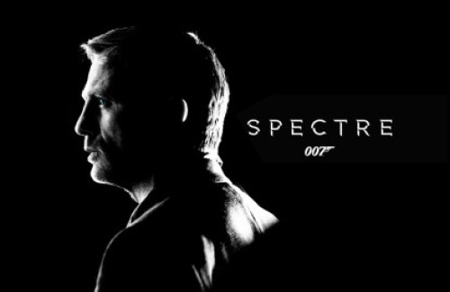

Review: 'Spectre' Is The Worst 007 Movie In 30 Years
Poorly mixing nostalgia and newfangled “it’s all connected!” franchise world-building, the stitched-together Spectre will bore the living daylights out of you while threatening to render James Bond a culturally irrelevant relic of the past.
The Box Office:
- Daniel Craig Partial Filmography:
- Specture
- Heineken’s the Chase
- Superheroes Unite for BBC Children in Need
- Skyfall
- The Girl with the Dragon Tattoo
- The Adventures of Tintin
- Dream House
- Cowboys & Aliens
- Defiance
- Quantum of Solace
- Flashbacks of a Fool
- Golden Compass
- Christoph Waltz
- Lea Seydoux
- Ralph Fiennes
- Monica Bellucci
- Ben Whishaw
One of the downsides of focusing on certain significant films well ahead of their release is that I don’t have much that is new to offer in terms of box office punditry when the time comes actually to review the film. So yeah, Sony, MGM, and Eon Productions are offering Spectre at a theater near you this Thursday night. The film has been in release in the United Kingdom since last Monday night and had already earned $80 million in six territories as of Sunday. The film cost $240 million to produce and comes as the franchise is at yet another crossroad. Daniel Craig can’t make up his mind about wanting to return, and Sony isn’t necessarily sending out signals that it will fight tooth and nail for distribution rights after this installment.
The film has the good luck/bad luck to follow up Skyfall, which took the series to uncharted box office waters. After the first two Daniel Craig entries had flirted with $600 million worldwide (the previous high was Die Another Day with $434m), Skyfall capitalized on the 50th anniversary of the franchise, a cameo with the Queen of England at the summer Olympics, rave reviews, and a relative lack of competition to snag a $1.1 billion worldwide total and a $300m+ domestic total. So now there is a risk that Spectre will be written off as a failure if it fails to top $300m domestic and/or $1b worldwide. That’s silly of course, but that’s the game.
Of course, the reviews won’t be as superb this time out, The Hunger Games and The Good Dinosaur are tougher competition than The Twilight Saga and Rise of the Guardians, and I’d wager Star Wars: The Force Awakens will be a slightly bigger mid-December whammy than The Hobbit: An Unexpected Journey. We’ll be following this one for a while, but let’s try not to go nuts if Spectre only earns $250m domestic and/or only makes $800m worldwide. I think James Bond will return regardless, and I believe you know that too.
The Review:
Spectre qualifies as a textbook example of “Be careful what you wish for!” For those longtime fans who have wanted to see something of a return to the broader and campier films that defined the Roger Moore era of the 007 franchise or those who wished to see the 007 franchise adapt to the new world of explicitly continuity-driven franchise filmmaking, well, you got what you wanted. Spectre unsuccessfully blends these two somewhat diametrically opposed elements while offering what plays like a dumbed-down and diluted remake of Skyfall and (amusingly) Mission: Impossible Rogue Nation. For the first time in a very long time, the 007 franchise is chasing its own tail and regressing to the point where it threatens to become culturally irrelevant.
The film, again directed by Sam Mendes and with many of the same screenwriters onboard as were with Skyfall, starts off with a corker of an opening sequence, as Daniel Craig and Stephanie Sigman sneak around Mexico City before 007 takes it upon himself to track down some visiting terrorists and do his thing. The first portion of this sequence is all one long take, and the whole extra-long set piece is full of visual splendor and believe-your-eyes stunt work. The opening credit sequence also offers something of a jolt, as it actually includes moments from the last three Craig films. But once the opening credits sequences winds down, the film grinds to a punishing halt. Those fleeting glimpses of Eva Green, Javier Bardem, and Judi Dench (who is badly missed this time out) serve not as a pleasant reminder but a foreboding warning that this is going to bring everything full circle in an uncommonly unsatisfying manner.
One of my issues with Skyfall (which still holds up as a bristling action thriller) was that it seemed to forget that the Pierce Brosnan movies existed and seemingly stole character arcs (Is Bond capable or relevant?), would-be topicality (“Computers are amazing!”), and plot points (M’s sins come back to haunt her!) and proclaimed them cutting edge. It is bewildering to see Spectre basically commit the same crime against Skyfall. This film reeks of a long-running franchise merely copying the elements of the last unexpectedly successful installment. Think Fast & Furious 6 aping the structure of Fast Five to lesser results.
The filmmakers will argue that they are broaching topicality by discussing drone warfare and government surveillance, but A) Skyfall already did this in a much pluckier manner and B) the film cheats by having the potential evil not be an overeager government but a shadowy cabal of super villains. Yes, that’s really what the problem with surveillance and drone warfare is, folks. Speaking of Spectre, it really is the old-school Legion of Doom-type organization, but it comes off as significantly less scary than the plausible real-world manipulations of Quantum. And it’s a lot less entertaining as well.
Christoph Waltz comes off as an inferior version of Javier Bardem’s deliciously obnoxious “kill the world with the touch of a button” baddie. Heck, Waltz was more engaged as the villain in The Green Hornet and frankly comes off as somewhat pathetic as far as Bond antagonists go. It’s weird seeing Waltz deliver a variation on Bardem’s character from the last film which itself had elements borrowed from Sean Bean’s tech-savvy and personally connected baddie in GoldenEye. No, I won’t reveal whether or not Waltz or anyone else is playing John Harrison, but I will say that said tease destroys the momentum of the picture.

The film is fashioned as a mystery where Bond goes on the lam/off the books (for at least the second or third time in four films, depending on if you count the first hour of Casino Royale) to uncover a secret that may or may not have personal ties. But when the (painfully telegraphed) reveal arrives, it is shocking to none of the participants and thus irrelevant to us. The entire film is built around whether or not these new Daniel Craig entries share certain similarities to the older movies and/or whether the four Daniel Craig movies now share a tightly connected continuity.
The film is obsessed almost exclusively with its retconned revelations and little else since. And yet since we are needlessly kept in the dark waiting patiently for revelations that end up having little impact, the end result is a shockingly dull 007 adventure. Spectre trips over itself to tie everything that happened in Casino Royale, Quantum of Solace, and Skyfall into a connected mythology, but in doing so only dilutes those prior installments. That this is all done in a brutally perfunctory manner proves to be the film’s fatal flaw. The screenplay lacks snappy dialogue and the players look anguished rather than energized.
That the movie takes the franchise in places I wasn’t fond of doesn’t help, but I knew that going in from the trailers. But the narrative inertia and lack of much entertainment value in the form of engaging action or nuanced screenwriting is something of a shock. I could have easily forgiven a 007 movie that played this game with an otherwise winning hand. But Spectre bluffs for two hours and then throws down a pair of fours and screams “Yahtzee!” The narrative skeleton is a Mad Libs version of a stereotypical 007 adventure.
Come what may, Die Another Day (not my favorite Bond movie and the last outright bad one) was a zippier entertainment with a decent first act and at least tried to play with the formula a bit. And yes, I do give credit to Quantum of Solace for also trying something different and at least somewhat succeeding.
Bond’s would-be investigation actually hinders progress, and it is awkward watching him needlessly endanger the lives and/or careers of his friends purely out of irrational stubbornness. That’s a minor flaw that Rogue Nation shares, but that Tom Cruise adventure had a momentum that popped, characters that engaged, and action sequences that delighted. Spectre sadly has little of this. The majority of its 2.5-hours, which feels like punishment for those who complained about Quantum of Solace‘s 105-minute running time, is pretzeled in a manner so as to allow as many homages to the previous Bond movies as possible.

But outside of the homages, the entire enterprise feels perfunctory in a way that the franchise has not felt since the tail end of the Roger Moore days, as even the promised tropes don’t deliver. To quote Weird Al Yankovic, much of Spectre feels like strained “mandatory fun.” Daniel Craig looks pained to find himself in what is at least half of a cheeky Roger Moore 007 movie, and one not fit to lick the boots of The Spy Who Loved Me. This film is far more of a “check off the elements” entry than any of the prior recent films, and as such it all feels tantamount to going through the motions.
There is a third act escape sequence from a villain’s abode that is so clean, so quick, and so video game-ish effortless that I honestly thought it was going to be revealed to be a dream sequence. There is terrific stunt work on display in the first act car chase, the second act plane vs. cars demolition derby, and at least some of the awkward third act action scenes. And the film looks gorgeous when it steps outside for a stroll (yes, it’s worth the IMAX upgrade if you’re so inclined). But there is no excitement, no urgency, no attempts to have the action sequences reveal character or move the plot forward. The notion of a real world 007 film combined with a somewhat over-the-top Roger Moore-ish entry doesn’t remotely gel, and the violence feels so lightweight that it renders Spectre less worthy of fear than Dr. Evil’s organization.
The film even fails the promise of Skyfall by not actually taking advantage of the notion of M (Ralph Fiennes), Q (Ben Whishaw), and Moneypenny (Naomie Harris) being capable field agents. The much-discussed Monica Bellucci appearance is a glorified cameo, one arbitrary conquest that borders on near rape for a beat or tw0 before being forgotten. Bond’s main squeeze is a classic example of telling you that a female character is strong/intelligent/empowered but having her get beaten down/captured at almost every opportunity. Lea Seydoux’s Dr. Madeleine Swann is the most useless “tag-along girl” that James Bond has had in decades. Seydoux (who tries valiantly with what she is given) and Craig’s big “dinner on a train” conversation is comprised of warmed-over “How can you do what you do?” leftovers from GoldenEye, and from this moment alone we’re supposed to buy that this isn’t just a fling but a defining romantic relationship.
Pretty much everything Spectre has to offer amounts to something that a previous Bond movie did better. And that’s the trap of doing a Bond movie in the “generational nostalgia” sandbox. You end up replaying the best parts of other films and reminding audiences that prior 007 adventures did it better. The notion of 007 doing generational nostalgia is interesting and timely, but the end result is merely an example of it rather than a dissection or deconstruction. Think of a Friedberg and Seltzer movie where the entertainment value comes from recognizing what movies are being “homaged.” Spectre is a rare 007 film that charts no new ground but instead just swipes from its own storied legacy.
I’d argue that it’s the Star Trek Into Darkness of 007 movies, but Star Trek Into Darkness at least charted its own course for most of the film (the fan service is mostly confined to the last couple reels) while offering something of a “new Trek vs. old Trek” debate at its core. Spectre has nothing deeper under the hood. The film is a step backwards in terms of using the reboot to go into bold new territory with the franchise and instead going back into the nostalgia well without much justification. And in a year when we’ve seen a number of spy films (The Man From U.N.C.L.E., Spy, Kingsman: The Secret Service, Mission: Impossible Rogue Nation) play around and/or comment on the Bond archetype and the underlying subtext of the Ian Fleming fantasy, it is disheartening to see the real deal try to copy itself while falling short of those that followed in its footsteps over the last decade or so.
But here’s the encouraging thing about the 007 franchise. If they drop the ball this film, they can completely start over from scratch and try again next time out. James Bond will return, but he’d better shape up before he ends up out like Flint. When James Bond needs to be saved, you know there is only one man you can call. This looks like a job for Campell… Martin Campbell!
Spectre isn’t just a bad movie, it’s a betrayal of everything the Bond franchise has accomplished since the series was rebooted in 2006 with Casino Royale. It’s a bewildering mess of a story laced with shitty cliches - the film ends with not one but TWO digital timer countdowns! - and riddled with crummy editing that reduces action scenes to tedium. It’s not funny but it is also not serious and, along the way, it diminishes James Bond and ruins one of his great villains.
In a lot of ways, Spectre embodies the obvious conclusion to a thread that has run throughout the four James Bond films that Daniel Craig has starred in since 2006. It's a shame, then, that it's not a terribly strong conclusion.
Earlier this year, a Spectre trailer spoof made the rounds, replacing shots of Daniel Craig’s modern take on James Bond with footage of Roger Moore. The joke was in the premise itself: while the latest string of movies have largely been praised for rebooting the character with a gritty, nihilistic edge, Moore’s films throughout the ‘70s and ‘80s have come to be seen as a series low point, heavy on wah-wah one-liners and comic book supervillainery. The current Bond era has tried to stay above that sort of thing, and when it did mine from the franchise’s past— and in Skyfall, it mined a lot — its memory was selective, mostly calling back to Sean Connery’s original take on the character.
What could be Daniel Craig’s last hurrah as everyone’s favorite licensed-to-kill spy has arrived, as Spectre infiltrates theaters this weekend riding a wave of overseas success that bodes well for the film’s domestic opening. The twenty-fourth film in the James Bond franchise has been eagerly awaited after Skyfall’s stunning success in 2012 made it the series’ most successful outing, with a cume nearly double that of 007′s previous highest-grosser.
James Bond films are, and always have been, more imitative than innovative. Even in the 1960s they were essentially superhero movies starring an indestructible character who wore street clothes (and the occasional wet suit) instead of tights and a cape. He ran, jumped, drove and flew through loosely connected setpieces that borrowed whatever cliches happened to be popular in action cinema at that moment and amped them up with more beautiful locations, bigger explosions, cornier jokes, and lush, loud music by John Barry. Given the franchise's lineage, it was only a matter of time before the producers went the extra kilometer and started modeling the Bond films on the Batman and Marvel franchises. The new superhero films featured fussy world-building and onion-layered subplots doled out over many films and many years. Their conception owed quite a bit to comic books and to serialized television like "24" (James Bond by way of "Die Hard"). The last three Bond films drew on all of those traditions, plus Bond's own distinctive set of cliches, and set the stage for this fourth Craig outing, "Spectre."
Paragraph: 1. If there is such a thing as "James Bond's Greatest Hits," then Spectre is it. The 25th movie about the British MI6 agent with a license to kill is party time for Bond fans, a fierce, funny, gorgeously produced valentine to the longest-running franchise in movies. Bond freaks will be orgasmic playing spot-the-reference to the series that began in 1962 with Dr. No.